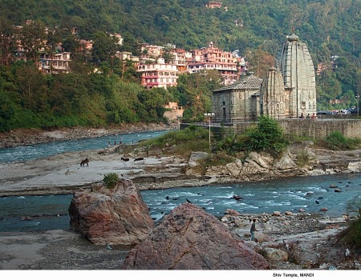
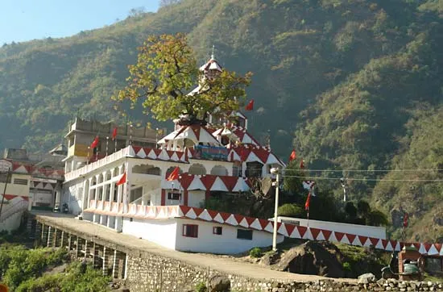

Choti Kashi : Mandi
मंडी का इतिहास: एक विस्तृत जानकारी
मंडी हिमाचल प्रदेश का एक जिला है, जो भारत के उत्तरी भाग में स्थित है। यह जिला पूर्व में पंजाब राज्य से सम्बद्ध था। मंडी का नाम शायद मंडव्य ऋषि के नाम पर है। इस इलाके का इतिहास बहुत पुराना है। इसका उल्लेख वेदों में भी मिलता है। मंडी का प्राचीन नाम मंडव्यपुरी था। यह नगर पुरातत्व विभाग द्वारा संरक्षित है। इस इलाके का निवासी आदिवासी होते थे। उनका जीवन संगठित रूप से गांवों में व्यतीत होता था। मंडी का इतिहास राजपूतों, मुगलों, सिक्खों, ब्रिटिश और उनके बाद भारत सरकार के शासनकाल से जुड़ा हुआ है। मंडी राजवंश का मूल नाम सुखेतिया था। यह राजवंश सत्रहवीं सदी में उत्तर प्रदेश के कानपुर से आकर यहां बस गया था। यहां उन्होंने अपना राज्य स्थापित किया था। मंडी का स्वतंत्रता संग्राम के समय भाग लेने वाले लोगों का बहुत बड़ा योगदान है। इस इलाके से कई स्वतंत्रता सेनानी निकले थे।

मंडी शिवरात्रि: एक धार्मिक उत्सव का महत्व और परंपरा
मंडी जिले में मंडी शिवरात्रि बहुत ही महत्वपूर्ण उत्सव है। यह उत्सव हिन्दू धर्म के सबसे महत्वपूर्ण त्योहारों में से एक है जो महाशिवरात्रि के दिन मनाया जाता है। इस उत्सव के दौरान मंडी जिले के शिव मंदिरों में भक्तों की भीड़ उमड़ती है जो भगवान शिव को चारों धामों में भ्रमण करने के लिए निकलते हैं। मंडी शिवरात्रि उत्सव में लोग बड़ी संख्या में शिव मंदिरों में जाते हैं। इस उत्सव के दौरान शिव मंदिरों में भक्तों के लिए विशेष पूजा-अर्चना की जाती है जिसमें भगवान शिव को जल, धूप, दीप और फल-फूल चढ़ाये जाते हैं। लोग इस उत्सव के दौरान भजन-कीर्तन करते हुए शिव मंदिरों के प्रवेश द्वार पर खड़े होते हैं और फिर मंदिर के भीतर जाकर भगवान शिव की पूजा करते हैं। इस उत्सव का अधिकतर जोश मंडी शहर में होता है जहां लोग भगवान शिव के नाम का जप करते हुए नाचते हैं और धुंएं की भारी महक से शिवरात्रि का उत्साह माहौल महसूस करते हैं। लोग रंग-बिरंगे कपड़े पहनते हुए नाचते हुए शिव मंदिरों की ओर बढ़ते हैं। मंडी शिवरात्रि उत्सव के दौरान मंडी शहर धर्म और सभ्यता के संगम का अद्भुत उदाहरण प्रदर्शित करता है। इस उत्सव के दौरान शिव मंदिरों में लोग नहीं सिर्फ धर्म से जुड़ते हैं बल्कि यह एक सामाजिक उत्सव भी होता है जिसमें लोग एक दूसरे से मिलते हैं, खाने के लिए प्रसाद बांटते हैं और एक दूसरे को दुआएं देते हैं। इस उत्सव के दौरान मंडी जिले के बाहर भी खास जगहों पर भगवान शिव की पूजा की जाती है। मंडी शिवरात्रि का उत्सव हर साल बड़ी धूम-धाम से मनाया जाता है जिसमें लाखों लोग भाग लेते हैं।

मंडी शिवरात्रि में विभिन्न देवी-देवताओं का महत्व: जानें उनकी कहानियां
मंडी शिवरात्रि मेले के दौरान अनेक भगवान शिव के मंदिरों से लोग एकत्र होते हैं। इस मेले में मंडी के अलावा अन्य स्थानों से भी अनेक देवताओं की मूर्तियों को लेकर प्रदर्शनी निकाली जाती है।
मंडी शहर के लोग शिवरात्रि मेले के दौरान विभिन्न विवादों को सुलझाने के लिए मंदिरों से देवताओं की मूर्तियों को निकाल कर मेले में लाते हैं। इस मेले में मंदिरों से लेकर खड़गधमारा, पांच नाला, तालै खड़गदेव, पदलोका मंदिर जैसे अनेक मंदिरों के साथ ही बिलासपुर, जोगिन्दरनगर, शिमला, सोलन, कुल्लू, चंबा, मानिकरण, मणाली जैसे अनेक स्थानों से लोग आते हैं जो अपनी देवताओं की मूर्तियां इस मेले में लेकर आते हैं।
इस मेले में शिव मंदिरों के अलावा माँ पार्वती, काली माँ, कार्तिकेय, गणेश, दुर्गा माँ, लक्ष्मी माँ, विष्णु, सूर्य, राम, कृष्ण, हनुमान, जगन्नाथ और संतों की मूर्तियां भी प्रदर्शित की जाती हैं।
मंडी के अलावा, बेस नदी जो शहर से गुजरती है, के कुछ महत्वपूर्ण घाट भी हैं। शहर का सबसे प्रसिद्ध घाट भूतनाथ घाट है, जो मंदिर के साथ-साथ शहर का मुख्य आराधना स्थल भी है। इसके अलावा त्रिलोकनाथ घाट, पंचवक्तर घाट, सुखदेवी घाट और महाराजा स्यामसिंह घाट आदि कुछ अन्य महत्वपूर्ण घाट भी हैं।
शहर में न सिर्फ मंदिरों और घाटों की बहुत सारी विशेषताएं हैं, बल्कि शहर का इतिहास भी बहुत गहरा है। मंडी पहले सुकेतियों की राजधानी थी, जो अब लगभग लुधियाना के पास है। इसके बाद मंडी को परमार वंश के शासनकाल में उत्तरप्रदेश और हरियाणा से आये हुए आर्य वंशीयों ने जीता था। इन वंशीयों ने मंडी को अपनी राजधानी बनाया था और उन्होंने शहर को सांस्कृतिक रूप से बहुत विकसित किया था।
इस तरह, मंडी का नाम इतिहास, प्राचीन मंदिरों, घाटों, शौक बाजार और खासतौर पर शिवलिंग के अधिकार से संबंधित आदर्श स्थान के रूप म है। इसी कारण शहर को छोटी काशी के नाम से भी जाना जाता है।
शहर के मंदिरों में से सबसे अहम मंदिरों में भूतनाथ मंदिर, त्रिलोकनाथ मंदिर, आर्यगंगा मंदिर, पाड़ीजात शिव मंदिर और तारेश्वर महादेव मंदिर शामिल हैं। इन मंदिरों के अलावा, शहर में अनेक और मंदिर भी हैं जो स्थानीय लोगों की आस्था का केंद्र हैं।
इसके अलावा, मंडी शहर में विश्वविद्यालय, संग्रहालय, जैन मंदिर और समुद्र तल से लगभग 2000 मीटर की ऊंचाई पर स्थित शिखरों वाला नजदीकी पर्वत राजमाता बहु नगा मंदिर भी है।
आखिर में, मंडी का शहर एक व्यापक रूप से विकसित हुआ है और यह उत्तर भारत में एक विशेष पर्यटन स्थल के रूप में मान्यता प्राप्त है।

क्या हैं छोटी काशी और इसका राज ?
मंडी को छोटी काशी या पहाड़ों की वाराणसी के नाम से जाना जाता है क्योंकि शहर में कई प्राचीन और महत्वपूर्ण मंदिर हैं। मंडी में 80 से अधिक मंदिर हैं जो शहर के अलग-अलग हिस्सों में फैले हुए हैं, और इनमें से कई को 800 से अधिक साल पुराने माना जाता है। इन मंदिरों में से कुछ प्रमुख मंदिर जैसे कि बाबा बलक नाथ मंदिर, तालेश्वर महादेव मंदिर, पदलोक मंदिर, पंचवक्तर मंदिर, त्रिलोकनाथ मंदिर, भूतनाथ मंदिर आदि हैं। इन मंदिरों में शिवलिंग और शक्ति पीठ आदि के अतिरिक्त अन्य देवी-देवताओं की मूर्तियां भी स्थापित हैं।
मंडी संस्कृति: परंपराओं और विरासत की जानकारी
मंडी एक समृद्ध संस्कृति और परंपराओं से भरी हुई जगह है। यहां कुछ मुख्य संस्कृतियों की एक सूची दी गई है: पहाड़ी नृत्य: मंडी में पहाड़ी नृत्य एक प्रमुख संस्कृति है। इसमें स्थानीय लोग अपनी परंपरागत पहाड़ी ड्रेस में नृत्य करते हैं। यह नृत्य उनके धार्मिक उत्सव और त्योहारों पर भी नृत्य करने का एक तरीका है। मंडी शिवरात्रि मेला: मंडी शिवरात्रि मेला भारत के सबसे बड़े धार्मिक मेलों में से एक है। यह मेला आमतौर पर फरवरी या मार्च के महीने में आयोजित किया जाता है और इसमें अनेक संस्कृति की गतिविधियों का आयोजन किया जाता है। स्थानीय खाना: मंडी में स्थानीय खाना एक प्रमुख संस्कृति है। यहां खाने का स्वाद अन्य शहरों से थोड़ा अलग होता है और इसमें स्थानीय स्पाइसेस का विस्तार होता है।
मंडी संस्कृति: परंपराओं और विरासत की जानकारी
मंडी शहर अपने प्राचीन एवं ऐतिहासिक मंदिरों, बाजारों, व विभिन्न धार्मिक स्थलों के लिए विख्यात है। यहाँ कुछ ऐसे प्रमुख मंदिर व बाजारों के नाम दिए गए हैं।
त्रिलोकनाथ मंदिर: यह मंदिर भगवान शिव के लिए समर्पित है। इस मंदिर का निर्माण 16वीं सदी में हुआ था। इसके अलावा, मंदिर में माँ पार्वती व भगवान गणेश की मूर्तियां भी हैं।
पंचवक्तर मंदिर: यह मंदिर भगवान शिव के लिए समर्पित है और इसके पांच मुख्य मंदिर अलग-अलग मुख्यताओं के लिए समर्पित हैं। यहाँ कुछ स्थानों का नाम हैं जैसे भूतनाथ मंदिर, आर्या समाज मंदिर, महिला मंदिर इत्यादि।
शहर में भीमा काली मंदिर और तारना माता मंदिर जैसे कुछ और मंदिर हैं।
भीमा काली मंदिर: यह मंदिर भगवानी भीमा काली के लिए समर्पित है। यह मंदिर एक पहाड़ी पर स्थित है और वहां से शहर का खूबसूरत नजारा देखा जा सकता है।
तारना माता मंदिर: यह मंदिर माँ तारना के लिए समर्पित है। यह मंदिर भी पहाड़ी पर स्थित है और वहां से शहर का नजारा देखा जा सकता है।
इसके अलावा, मंडी शहर में कुछ विख्यात बाजार हैं जैसे महाशुक्ला बाजार, अदार्श मार्केट, सरदार बाजार, बरा बाजार, खाड़ा बाजार इत्यादि।मंडी शहर में इंदिरा मार्केट एक प्रसिद्ध बाजार है जो अपनी विस्तृतता और विविधता के लिए जाना जाता है।
इंदिरा मार्केट शहर के मुख्य बाजारों में से एक है। इस बाजार में आपको सभी प्रकार के सामान, वस्तुएं और खाद्य पदार्थ मिलते हैं। यहां आप स्थानीय सब्जियां, फल, सूती कपड़े, शौकिया बने हाथ के उत्पाद, और बहुत कुछ खरीद सकते हैं।
इंदिरा मार्केट का अर्थ इंदिरा गांधी जी के नाम पर रखा गया था। इसे स्थानीय लोगों द्वारा व्यवस्थित किया जाता है और यह शहर में शॉपिंग के लिए सबसे लोकप्रिय स्थानों में से एक है। इस बाजार में दुकानें सुबह 10 बजे से शुरू होती हैं और शाम को तक खुली रहती हैं।
क्या आपको और जानकारी चाहिए जो मंडी शहर में दिलचस्प हो सकती है? यदि हाँ, तो निम्नलिखित मंडी के बाजारों और मंदिरों के बारे में जानकारी हो सकती है:
मंडी शहर का मुख्य मंदिर है ब्रिजेश्वर महादेव मंदिर। यह मंदिर मंडी शहर के चौबीस खम्भे वाले बाजार में स्थित है।
भीमा काली मंदिर भी बहुत प्रसिद्ध है जो मंडी शहर से कुछ ही दूरी पर स्थित है। यह मंदिर भव्य है और विश्वास किया जाता है कि यहां भगवती भीमा काली का निवास होता है।
तर्ना माता मंदिर भी मंडी शहर से थोड़ी दूरी पर स्थित है। यह मंदिर हिमाचल प्रदेश के एक प्रसिद्ध धार्मिक स्थलों में से एक है और यहां देवी तर्ना माता की पूजा की जाती है।
अगर आपको चाय पीने का शौक है, तो आप मंडी शहर के बेस्ट चाय की तलाश में हो सकते हैं। मंडी शहर में चाय के लिए कई स्थान हैं, जैसे कि टेंपल चाय शॉप, चाय बार आदि।

मंडी तक पहुंचने का तरीका: सभी सुविधाओं के साथ मंडी कैसे पहुंचें
आप दिल्ली से हिमाचल परिवहन निगम (HRTC) के एक्सप्रेस बस सेवाओं के माध्यम से भी मंडी पहुंच सकते हैं। इससे आपको मंडी तक आसानी से पहुंचने में मदद मिलेगी। दिल्ली से राजधानी एक्सप्रेस ट्रेन से रामपुर या शिमला तक जा सकते हैं। वहां से, आप टैक्सी, हाथीबाग टूरिज्म, या बस सेवा के माध्यम से मंडी तक पहुंच सकते हैं। इसके अलावा, जो भी सबसे नजदीक हो, वहीं नजदीकी रेलवे स्टेशन से टैक्सी, बस या अन्य साधनों के माध्यम से मंडी तक पहुंच सकते हैं।
People who read this also read